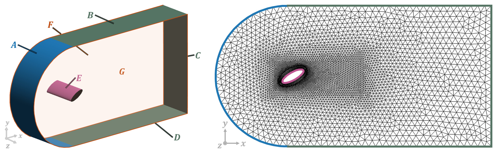

What it is
400 high-fidelity simulations of 3D turbulent wakes behind cylinders of varying shape, Reynolds number and angle of attack, each with 400 time steps on an irregular mesh.
NeurIPS 2026 · Track on Evaluations and Datasets
A Large-Scale Benchmark for Turbulent 3D Neural PDE Surrogates
1Sorbonne Université, CNRS, ISIR 2TU Delft, Faculty of Aerospace Engineering 3Sorbonne Université, CNRS, Institut Jean Le Rond d’Alembert 4Criteo AI Lab
Overview
400 high-fidelity simulations of 3D turbulent wakes behind cylinders of varying shape, Reynolds number and angle of attack, each with 400 time steps on an irregular mesh.
Real 3D turbulence with an active energy cascade, millions of irregularly placed points per frame, and long time horizons, all in the same benchmark.
A fixed 320/40/40 split, mini-TurtLES subsets from 0.8 TB, a 5 GB debug case, and per-case velocity spectra at wake probes.
Mid-span slices of the same simulation as the 3D view above. The dataset stores the full 3D fields; slices are for visualisation only.
Many “dynamic fluid” benchmarks are unsteady or chaotic without containing 3D turbulence, where vortex stretching drives energy from large eddies down to small ones. Others reach 3D and industrial scale but only at steady state, or stay on coarse point clouds. TurtLES covers all of these at once.
| The Well | DrivAerNet | EAGLE | TurtLES | |
|---|---|---|---|---|
| 3D | Partly | Yes | 2D | Yes |
| Time-dependent | Yes | Steady | Yes | 400 steps |
| Irregular mesh | No | Yes | Yes | Yes |
| Geometry variation | No | Yes | Yes | Yes |
| Resolved 3D turbulence | Idealised | RANS | No | iLES |
| Per frame | ≤ 128³ grid | ~107 DoF | ~10³ points | 3–11 M points |
Dataset
Each case places a super-elliptic cylinder in a uniform inflow. In this range the wake transitions to turbulence while the boundary layer stays laminar, so every trajectory contains an active 3D energy cascade.

A Sobol’ sequence spreads the 400 samples evenly over the parameter space, without clusters or gaps.



Gallery
At low Re the wake is made of fewer, thicker and more coherent vortex tubes. At high Re it breaks up into a much denser field of fine-scale structures.

Get the data
Trajectories come pre-split into 320 training, 40 validation and 40 test cases. Each shape family is split exactly 80/10/10, and every subset covers the same range of Re, α and a as the full dataset.

Fixed, named subsets keep results comparable across labs: drop shape families, keep fewer snapshots, or both.
G4-T400
≈ 14 TB
400 trajectories × 400 snapshots
# A ready-to-use Python download script
# will be published here.
#
# Meanwhile, the dataset is on Hugging Face:
# huggingface.co/datasets/turtlesprojectml/turtles
TurtLES-debug (≈ 5 GB) holds the first 100
snapshots of a reference circular cylinder (Re = 1000) for
installation checks. Every subset is described in miniturtles.md on the
dataset page.
Scope
Turbulent cylinder wakes in the shear-layer transition range. Other geometries and Reynolds numbers are not covered.
Ground truth is implicit LES, not DNS or experiment.
Snapshots are sub-sampled in time, and the window is too short for converged statistics such as Reynolds stresses.
Cite
@inproceedings{platenburg2026turtles,
title = {{TurtLES}: A Large-Scale Benchmark for
Turbulent {3D} Neural {PDE} Surrogates},
author = {Platenburg, Jarno and Kassa{\"\i} Koupa{\"\i}, Armand
and Cinnella, Paola and Gallinari, Patrick},
booktitle = {Advances in Neural Information Processing Systems
(NeurIPS), Track on Evaluations and Datasets},
year = {2026}
}Thanks
We acknowledge the financial support provided by DEEPNUM (ANR-21-CE23-0017-02), PHLUSIM (ANR-23-CE23-0025-02), MELISSA (ANR-24-CE23-7140-01), PEPR Sharp (ANR-23-PEIA0008, ANR, FRANCE 2030), and cluster IA PostGenAI@Paris (ANR-23-IACL-0007). This project was provided with computer and storage resources by GENCI at IDRIS thanks to the grants 2026-AD011016890R2, 2026-AD011017368, 2025-A0191016890 and 2026-A0211016890 on the supercomputer Jean Zay’s V100/A100/H100 partitions.